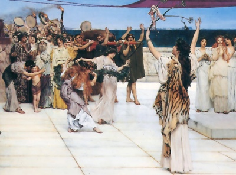

|  | Five Stages of Greek Religionby Gilbert Murray[1925] |
In this book the eminent classical scholar Gilbert Murray details the evolution of Greek religion, from a cycle of festivals devoted to the principal Olympian Gods, through the Homeric hymns, Hellenistic philosophy including Platonism and Gnosticism. Murray traces elements through centuries of Greek spirituality which culminated in Christianity. He includes a translation of the Treatise of Sallustius, which is a credo of later Greek pagan beliefs and philosophy. This book is essential reading for classicists and anyone interested in the evolution of ancient Greek religion.
Title Page
Preface to the Third Edition
Preface to the Second Edition
Preface to the First Edition
Contents
I. Saturnia Regna
II. The Olympian Conquest
III. The Great Schools
IV. The Failure of Nerve
V. The Last Protest
Appendix: Translation of the Treatise of Sallustius
Index
Transcriber's Notes